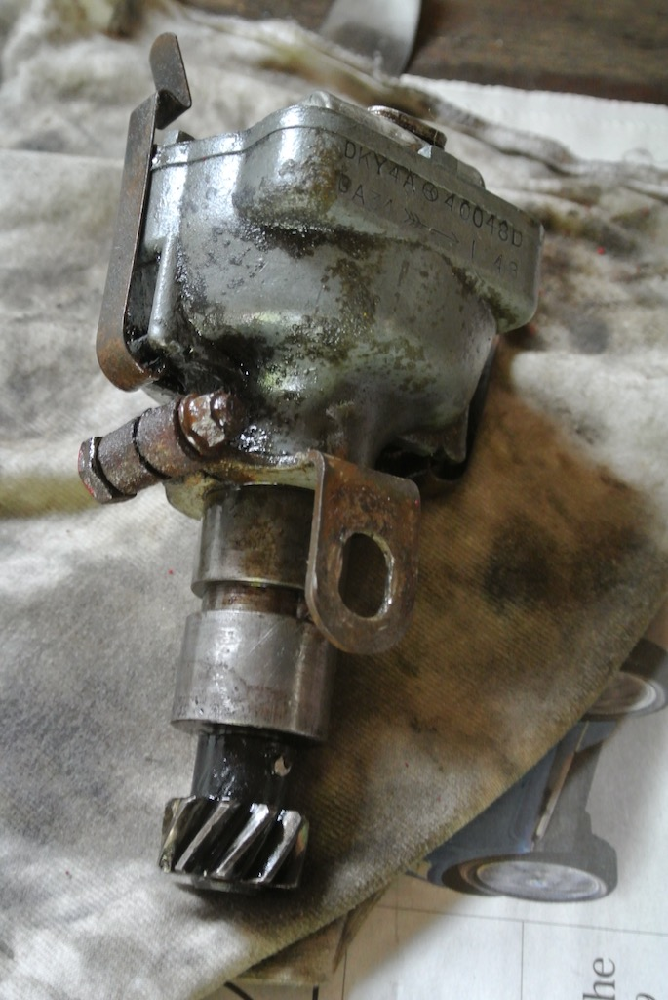
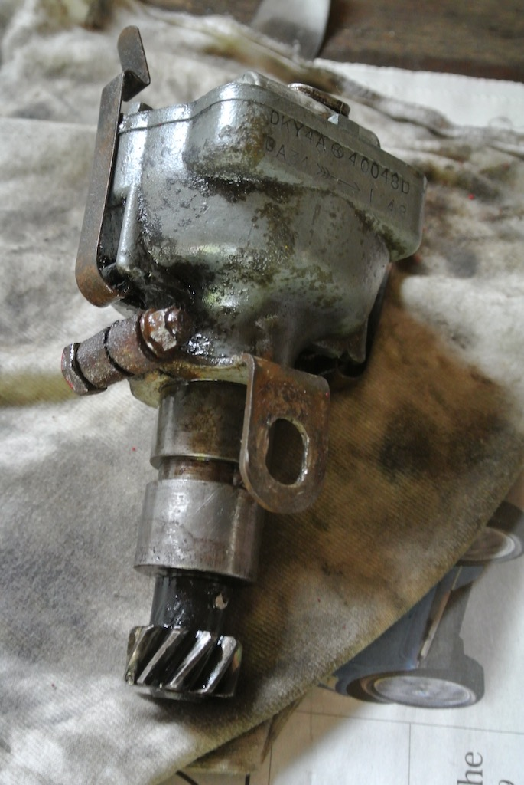
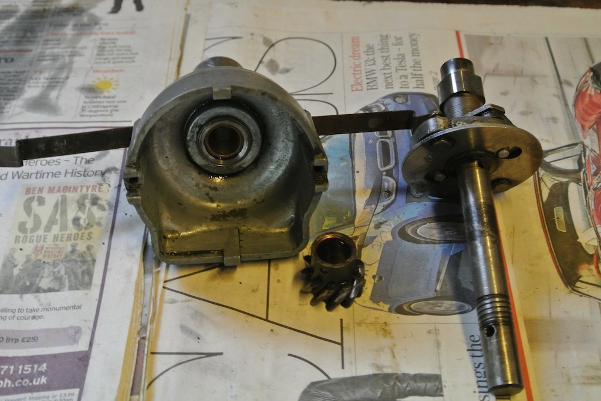
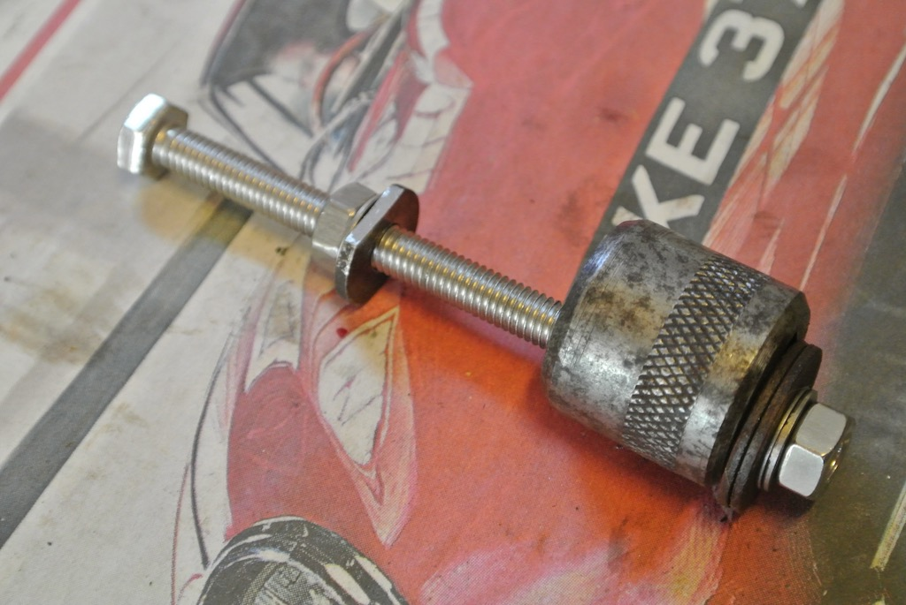
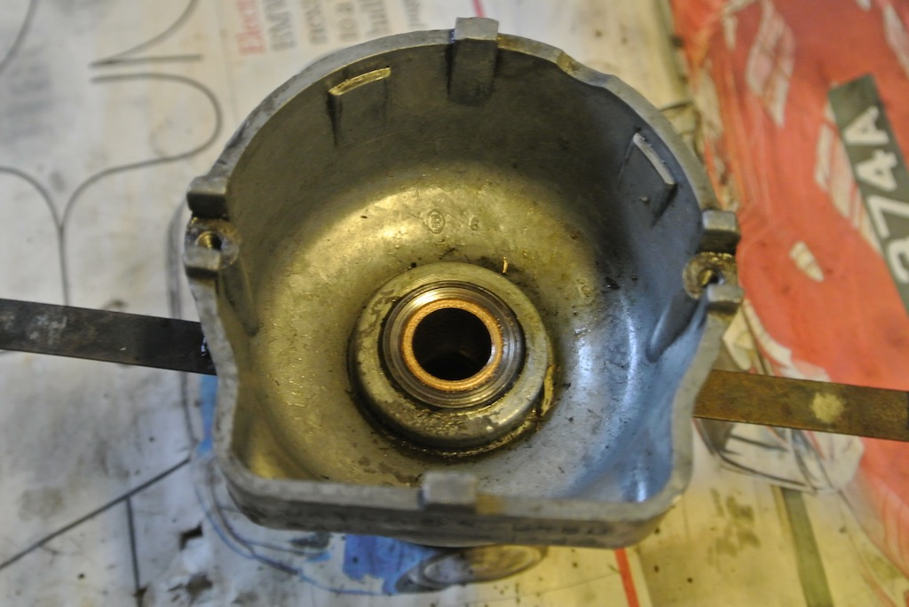

Replacement of Distributor Bushes
It all started towards the end of June 2017 with a desire to check the ignition timing on TC4985. Various people have given their opinion. The concensus seems to be about 8-10 degrees BTDC at an idle speed of about 900 rpm. However, Burns (http://www.chicagolandmgclub.com/techtips/mgt/tune_up1.html) points out that the centrifugal weights start to advance the timing from about 300 rpd and so the timing should really be set statically to TDC.
So I borrowed a timing light, painted small white marks on the timing chain cover pointer and on notch on crankshaft pulley, brought the engine up to 70-80 C and connected the strobe to the HT lead to cylinder number 1, getting the following results:
| RPM | Advance (degrees) |
|---|---|
| 1000 | 10 |
| 2000 | 18 |
| 3000 | 27 |
This looked good. The centrifugal advance is obviously working and an 8-10 degree advance with modern petrol is said to be about right.
However, I then decided to check the variation across cylinders, so aligned the timing marks and rotated the starting handle 180 degree ‘by eye’ and added a white paint spot on the crankshaft adjacent to pointer. Then I measured the advance at 1,000 rpm by connecting the strobe to each HT lead in turn, giving the following results:
| Cylinder | Advance (degrees) |
|---|---|
| 1 | 10 |
| 2 | 12 |
| 3 | 22 |
| 4 | 32 |
This is very worrying and I can’t think of a mechanism that would cause this amount of variation. Although the engine runs quite well, which you would think it wouldn't, with this degree of timing variation.
The distributor rotates at half the speed of the crankshaft, but an increase in advance of 12 degrees and 22 degrees (for cylinders 3 and 4) would still mean a rotation of the distributor of 6 and 11 degrees. Surely worn bushes would not cause this. There is, however, more oil in the distributor than I would expect.
After installing a new (red) rotor arm I found that I could move the distributor spindle up and down by 60 thou. Again according to Burns, the end float should not be more than 40 thou.
 Burns article also describes a method of measuring the wear in the distributor bushes around the shaft (there are two). So I turned the crankshaft until the points were just about to open for cylinder 1 (points <2 thou open), pushed a wooden wedge between the distributor shaft and the condenser (both of which you can see in the photo) and measured the points opening, which was 18 thou. When I removed the distributor there was no sign of a thrust washer.
Burns article also describes a method of measuring the wear in the distributor bushes around the shaft (there are two). So I turned the crankshaft until the points were just about to open for cylinder 1 (points <2 thou open), pushed a wooden wedge between the distributor shaft and the condenser (both of which you can see in the photo) and measured the points opening, which was 18 thou. When I removed the distributor there was no sign of a thrust washer.
So it looks as though both the bushes and the thrust washer need replacing.
On the 3rd July 2017 I ordered bushes, thrust washer and gear pin from the Distributor Doctor at a cost of £28.14 including delivery.
The first action was to remove the two old bushes. You can just see the end of the top bush in the centre of the distributor bowl.
To pull out the bushes required getting something on the inside end of the bush. So I made a tool by filing flats on a washer so that it would slide through the bush and then rotate to fit against the end of the bush. I could then drop a bolt through the washer, put a socket on the end and tighten a nut so as to pull the bush out. This worked for one bush, but had to hammer the bolt head so as to remove the second bush.
The new bushes were a nice fit on the distributor shaft, but are an interference fit into the distributor body and so need to be pressed in. Having left the new bushes soaking in engine oil for a couple of hours I put them in the freeezer (in a plastic bag) for an hour and then heated the body with a heat gun. It was still necessary to put a wooden block over the end of the bush and hammer it quite hard to get it in.
Having got both new bushes in the body of the distributor I found that the shaft would not now go into the bushes! Luckily, a friend has a set of adjustable reamers. So we reamed the bores of the bushes until the shaft fitted.
When I tried to assemble the distributor I found that the gear would not go far enough on to the shaft to get the pin into the hole. So I reassembled the tool and pulled the lower bush a few thou further in. The final photo shows the new top bush in place.

I set the timing by finding the point of maximum revs and then retarding to reduce the revs by 50 rpm. When I measured the timing at 1000 rpm it was 10 degrees BTDC. However, the timing on cylinder 4 still appeared to be about 20 degrees! However, the engine seemed to run better. I adjusted the idle to 900 rpm (which later turned out to be a little slow).
© David James 2017 Last updated: 23rd August 2017